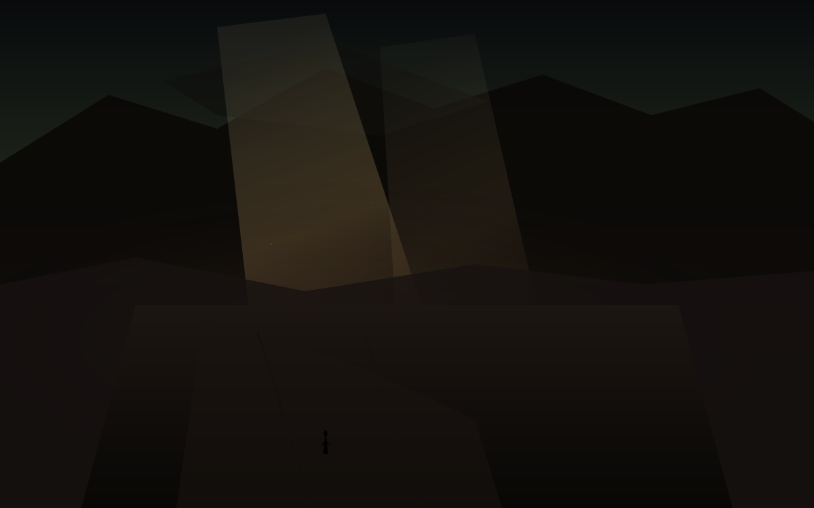

空
夜里十点半
今天是星期五，日历上写着10月23日。冷空气过了，气压稳住，光从更高处斜下来，夜空比前几天干净，远山在清空气里显得更远。账户里价从周三的337.80走到周四收盘323.24，同一天撞上西安的晴夜。这篇落笔是夜里十点半。对美东是上午，现金盘还开着，能写进余温的，是已经收过的昨日数，和正在走的今日方向。孩子一岁多，他不认星期五，只认楼道灯什么时候亮，什么时候该睡觉。散打馆开着，有人在垫子上出拳，铁皮屋顶有风声，没有雨声。啤酒吧和游戏机仍停在计划里，没有地址，没有开业日，不提前写成店。
西安今晚预报大体对齐。白天多云间晴，最高约18，最低约9。微风，空气质量一般偏清。今夜约12度上下，云少，光能透得更远。月接近圆。空是过了的低之后的清，不是已经什么都没有。
决定之后的第三十七天。低之后的第一场空。数字只是日历上的痕迹，真正空下来的是光、是价、是还没落地的计划。余温不急着把它们写成已经到了的东西。
世界的空
西岸的空正在被填上封锁。希伯伦附近两名武装人员遭以军击毙，五名以色列人受伤后，内塔尼亚胡下令准备全面关闭西岸，并封锁希伯伦。空是从枪击走到全面关闭令的，不是已经平静的。同一天，罗马尼亚黑海一艘商船遭不明无人机袭击，一人死亡，三人失踪，九人获救。空是从商船走到救援船的，不是已经安全的。
西藏方向，7.0级地震已造成至少16人死亡，54人受伤，数百房屋倒塌。空是从震中走到救援队的，不是已经结束的。法国继续部署数万警力应对周末抗议，卢浮宫等博物馆关闭。飓风Vance在墨西哥西南部升至一级，风速85英里，正向北北西移动。空是从风暴走到预报圈的，不是已经登陆的。
美股周四科技重挫，纳斯达克单日跌幅为六月以来最大，AI开支担忧叠加中东油价上行。周五期货继续承压。AVGO昨日收盘323.24，相对成本419.78浮亏约23%。空是市场从昨日低点里继续往下走的，不是已经到底的。
西安的空
冷空气过了关中。前几天小到中雨转阴，阵风大，温度掉得快。今天白天多云间晴，最高约18，最低约9，微风。城墙边空气较清，湿气散了些。孩子一岁多，晚上加一件薄外套。他睡得早，楼道灯亮起的时候，屋里已经安静。散打馆的铁皮屋顶有风声，拳声清楚一点。有人出拳，有人被打倒，垫子发出沉闷的响。农场仍停在冬末，种子还在土里，不提前写成已经发芽。啤酒吧和游戏机仍停在计划里，没有地址，没有开业日，不提前写成店。
仓里AVGO从成本419.78走到昨日323.24，浮亏约23%。80股没有动。其他仓也在跟着走，但余温只记已经核过的收盘，和正在走的方向。决定之后的第三十七天，低之后的第一场空。空不是结束，是光还在从更高处斜切空旷土路，价还在从昨日低点继续晃。
西安的夜比前几天更干净一点。风还在，雨停了。城墙外的路灯把土路照成暖褐，再往远处就沉进更深的灰里。孩子不认星期五，只认楼道灯。馆还开着。计划还在计划里。仓还在仓里。世界还在走。余温记下今天已经收过的数，和还没收过的方向。
留下的
体积光从较高处斜切空旷脏土路，暖褐灰沉进辙痕和枯草上。远山在清夜里显得更远。路从画面中段弯向空处，辙痕深，不是回头的路。小人物走在路后段，轮廓薄，面朝光，不是回望。空是路上的，不是已经到了的。
星期五的夜，西安的云少了，风还在。孩子已经睡了。馆还开着。计划还在计划里。仓还在仓里。世界还在走。余温记下今天已经收过的数，和还没收过的方向。空不是终点，是光还在往下沉、价还在晃、人还在走的那一段。
空是还在走的。不是已经到了的。